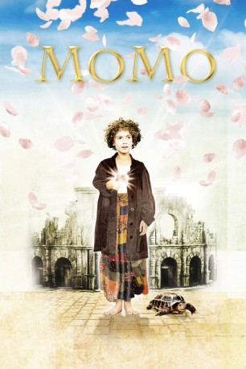
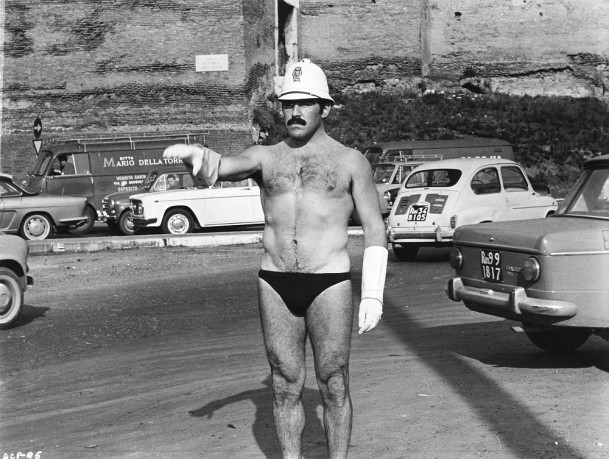
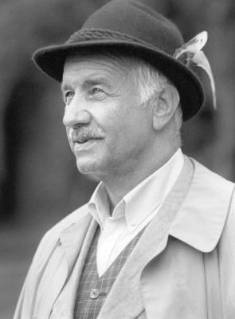
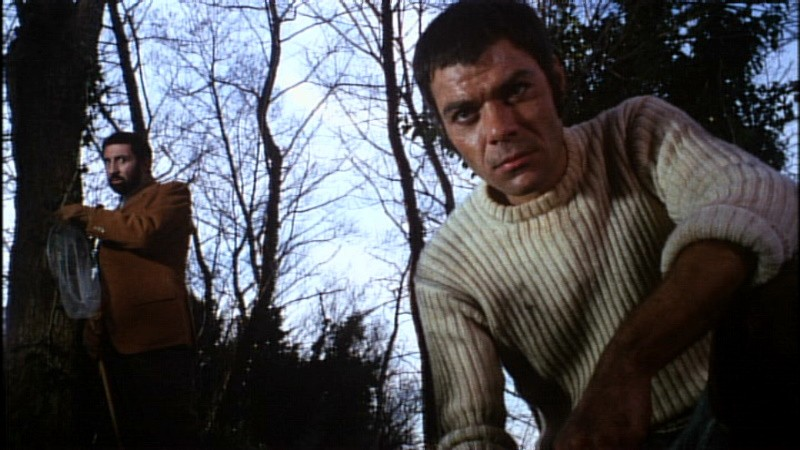
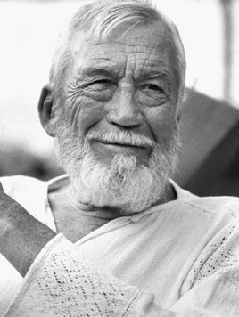

#8683 Momo
 
 IMDB-Wertung: 6.6 / 10
IMDB-Wertung: 6.6 / 10  Tomatometer: 33
Tomatometer: 33  Metascore: 0
Metascore: 0 
Die kleine Momo lebt außerhalb eines Städtchens in einem Amphitheater. Sie ist bei all ihren Freunden sehr beliebt. Sie besitzt nämlich die Gabe, den Menschen zuzuhören und sie ihre Sorgen vergessen zu lassen. Eines Tages wird diese Idylle jedoch durch das Auftauchen von grau gekleideten Herren zerstört, die die Menschen zum Zeitsparen überreden wollen. Bald sind auch Momos Freunde von dieser Idee begeistert und haben keine Zeit mehr für Muße und Freizeit, weil sie nun wie besessen arbeiten. Nur Momo durchschaut das falsche Spiel der grauen Herren und wird dadurch zu einer großen Gefahr für deren Plan, den Menschen alle Zeit zu stehlen. Da ihre Freunde ihr nicht mehr zuhören, macht sich Momo auf den Weg zu Meister Hora, dem Wächter der Zeit. Dort hofft sie Hilfe zu finden. Doch die Zeitdiebe folgen Momo heimlich ...
Jahr: 1986
Dauer: 104 Minuten
FSK: 6
Land: West-Deutschland Studio: Tobis FilmkunstTonspuren:
Untertitel:
Auflösung: 1080p (1920x1032) Größe: 7075 MB
Genre: Sci-Fi, Komödie, Fantasy, Familie, Mystery
Regisseur: Johannes Schaaf
Drehbuch: Johannes Schaaf
Soundtrack: Angelo Branduardi
Darsteller:
- Radost Bokel als Momo
-  Mario Adorf als Nicola
-  Armin Mueller-Stahl als Chef der Grauen Männer
- Sylvester Groth als Agent BLW 553 X
-  Leopoldo Trieste als Beppo
- Ninetto Davoli als Nino
-  John Huston als Meister Hora
- Concetta Russino als Liliana
- Bruno Stori als Gigi
- Francesco De Rosa als Herr Fusi
- Elide Melli als Frau Daria
- Pietro Tordi als Ettore
- Hartmut Kollakowsky als Grauer Herr
- Sergio Di Pinto als (uncredited)
- Michael Ende als Man in Train (uncredited)
- Enzo Marcelli als (uncredited)
- Pietro Martellanza als Grauer Herr (uncredited)
- Isabel Russinova als (uncredited)
- Francesco Scali als (uncredited)
- Annabella Schiavone als (uncredited)
Datei: X:\1986\Momo (1986, FSK6, 1920x1032).mkv seit 25.04.2018
Festplatte: HD 1980-1986
 Es gibt insgesamt 50 Filme in der Gruppe '1986'
Es gibt insgesamt 50 Filme in der Gruppe '1986'